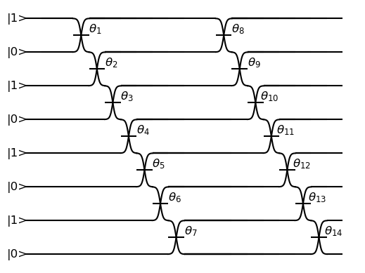

CUDA-Q Hardware Backends¶
CUDA-Q supports submission to a set of hardware providers. To submit to a hardware backend, you need an account with the respective provider.
Amazon Braket¶
Amazon Braket is a fully managed AWS service which provides Jupyter notebook environments, high-performance quantum circuit simulators, and secure, on-demand access to various quantum computers. To get started users must enable Amazon Braket in their AWS account by following these instructions. To learn more about Amazon Braket, you can view the Amazon Braket Documentation and Amazon Braket Examples. A list of available devices and regions can be found here.
Users can run CUDA-Q programs on Amazon Braket with Hybrid Job. See this guide to get started.
Setting Credentials¶
After enabling Amazon Braket in AWS, set credentials using any of the documented methods. One of the simplest ways is to use AWS CLI.
aws configure
Alternatively, users can set the following environment variables.
export AWS_DEFAULT_REGION="<region>"
export AWS_ACCESS_KEY_ID="<key_id>"
export AWS_SECRET_ACCESS_KEY="<access_key>"
export AWS_SESSION_TOKEN="<token>"
Submission from C++¶
To target quantum kernel code for execution in Amazon Braket,
pass the flag --target braket to the nvq++ compiler.
By default jobs are submitted to the state vector simulator, SV1.
nvq++ --target braket src.cpp
To execute your kernels on different device, pass the --braket-machine flag to the nvq++ compiler
to specify which machine to submit quantum kernels to:
nvq++ --target braket --braket-machine "arn:aws:braket:eu-north-1::device/qpu/iqm/Garnet" src.cpp ...
where arn:aws:braket:eu-north-1::device/qpu/iqm/Garnet refers to IQM Garnet QPU.
To emulate the device locally, without submitting through the cloud,
you can also pass the --emulate flag to nvq++.
nvq++ --emulate --target braket src.cpp
To see a complete example for using Amazon Braket backends, take a look at our C++ examples.
Submission from Python¶
The target to which quantum kernels are submitted
can be controlled with the cudaq::set_target() function.
cudaq.set_target("braket")
By default, jobs are submitted to the state vector simulator, SV1.
To specify which Amazon Braket device to use, set the machine parameter.
device_arn = "arn:aws:braket:eu-north-1::device/qpu/iqm/Garnet"
cudaq.set_target("braket", machine=device_arn)
where arn:aws:braket:eu-north-1::device/qpu/iqm/Garnet refers to IQM Garnet QPU.
To emulate the device locally, without submitting through the cloud,
you can also set the emulate flag to True.
cudaq.set_target("braket", emulate=True)
The number of shots for a kernel execution can be set through the shots_count
argument to cudaq.sample. By default, the shots_count is set to 1000.
cudaq.sample(kernel, shots_count=100)
To see a complete example for using Amazon Braket backends, take a look at our Python examples.
Note
The cudaq.observe API is not yet supported on the braket target.
Infleqtion¶
Infleqtion is a quantum hardware provider of gate-based neutral atom quantum computers. Their backends may be accessed via Superstaq, Infleqtion’s cross-platform software API that performs low-level compilation and cross-layer optimization. To get started users can create a Superstaq account by following these instructions.
For access to Infleqtion’s neutral atom quantum computer, Sqale, pre-registration is now open.
Setting Credentials¶
Programmers of CUDA-Q may access Infleqtion backends from either C++ or Python. Generate an API key from your Superstaq account and export it as an environment variable:
export SUPERSTAQ_API_KEY="superstaq_api_key"
Submission from C++¶
To target quantum kernel code for execution on Infleqtion’s backends,
pass the flag --target infleqtion to the nvq++ compiler.
nvq++ --target infleqtion src.cpp
This will take the API key and handle all authentication with, and submission to, Infleqtion’s QPU (or simulator). By default, quantum kernel code will be submitted to Infleqtion’s Sqale simulator.
To execute your kernels on a QPU, pass the --infleqtion-machine flag to the nvq++ compiler
to specify which machine to submit quantum kernels to:
nvq++ --target infleqtion --infleqtion-machine cq_sqale_qpu src.cpp ...
where cq_sqale_qpu is an example of a physical QPU.
To run an ideal dry-run execution on the QPU, additionally pass dry-run with the --infleqtion-method
flag to the nvq++ compiler:
nvq++ --target infleqtion --infleqtion-machine cq_sqale_qpu --infleqtion-method dry-run src.cpp ...
To noisily simulate the QPU instead, pass noise-sim to the --infleqtion-method flag like so:
nvq++ --target infleqtion --infleqtion-machine cq_sqale_qpu --infleqtion-method noise-sim src.cpp ...
Alternatively, to emulate the Infleqtion machine locally, without submitting through the cloud,
you can also pass the --emulate flag to nvq++. This will emit any target
specific compiler diagnostics, before running a noise free emulation.
nvq++ --emulate --target infleqtion src.cpp
To see a complete example for using Infleqtion’s backends, take a look at our C++ examples.
Submission from Python¶
The target to which quantum kernels are submitted
can be controlled with the cudaq::set_target() function.
cudaq.set_target("infleqtion")
By default, quantum kernel code will be submitted to Infleqtion’s Sqale simulator.
To specify which Infleqtion QPU to use, set the machine parameter.
cudaq.set_target("infleqtion", machine="cq_sqale_qpu")
where cq_sqale_qpu is an example of a physical QPU.
To run an ideal dry-run execution of the QPU, additionally set the method flag to "dry-run".
cudaq.set_target("infleqtion", machine="cq_sqale_qpu", method="dry-run")
To noisily simulate the QPU instead, set the method flag to "noise-sim".
cudaq.set_target("infleqtion", machine="cq_sqale_qpu", method="noise-sim")
Alternatively, to emulate the Infleqtion machine locally, without submitting through the cloud,
you can also set the emulate flag to True. This will emit any target
specific compiler diagnostics, before running a noise free emulation.
cudaq.set_target("infleqtion", emulate=True)
The number of shots for a kernel execution can be set through
the shots_count argument to cudaq.sample or cudaq.observe. By default,
the shots_count is set to 1000.
cudaq.sample(kernel, shots_count=100)
To see a complete example for using Infleqtion’s backends, take a look at our Python examples. Moreover, for an end-to-end application workflow example executed on the Infleqtion QPU, take a look at the Anderson Impurity Model ground state solver notebook.
IonQ¶
Setting Credentials¶
Programmers of CUDA-Q may access the IonQ Quantum Cloud from either C++ or Python. Generate an API key from your IonQ account and export it as an environment variable:
export IONQ_API_KEY="ionq_generated_api_key"
Submission from C++¶
To target quantum kernel code for execution in the IonQ Cloud,
pass the flag --target ionq to the nvq++ compiler.
nvq++ --target ionq src.cpp
This will take the API key and handle all authentication with, and submission to, the IonQ QPU(s). By default, quantum kernel code will be submitted to the IonQ simulator.
Note
A “target” in cudaq refers to a quantum compute provider, such as ionq.
However, IonQ’s documentation uses the term “target” to refer to specific QPU’s themselves.
To execute your kernels on a QPU, pass the --ionq-machine flag to the nvq++ compiler
to specify which machine to submit quantum kernels to:
nvq++ --target ionq --ionq-machine qpu.aria-1 src.cpp ...
where qpu.aria-1 is an example of a physical QPU.
A list of available QPUs can be found in the API documentation. To see which backends are available with your subscription login to your IonQ account.
To emulate the IonQ machine locally, without submitting through the cloud,
you can also pass the --emulate flag to nvq++. This will emit any target
specific compiler diagnostics, before running a noise free emulation.
nvq++ --emulate --target ionq src.cpp
To see a complete example for using IonQ’s backends, take a look at our C++ examples.
Submission from Python¶
The target to which quantum kernels are submitted
can be controlled with the cudaq::set_target() function.
cudaq.set_target('ionq')
By default, quantum kernel code will be submitted to the IonQ simulator.
Note
A “target” in cudaq refers to a quantum compute provider, such as ionq.
However, IonQ’s documentation uses the term “target” to refer to specific QPU’s themselves.
To specify which IonQ QPU to use, set the qpu parameter.
cudaq.set_target("ionq", qpu="qpu.aria-1")
where qpu.aria-1 is an example of a physical QPU.
A list of available QPUs can be found in the API documentation. To see which backends are available with your subscription login to your IonQ account.
To emulate the IonQ machine locally, without submitting through the cloud,
you can also set the emulate flag to True. This will emit any target
specific compiler diagnostics, before running a noise free emulation.
cudaq.set_target('ionq', emulate=True)
The number of shots for a kernel execution can be set through
the shots_count argument to cudaq.sample or cudaq.observe. By default,
the shots_count is set to 1000.
cudaq.sample(kernel, shots_count=10000)
To see a complete example for using IonQ’s backends, take a look at our Python examples.
Anyon Technologies/Anyon Computing¶
Setting Credentials¶
Programmers of CUDA-Q may access the Anyon API from either
C++ or Python. Anyon requires a credential configuration file with username and password.
The configuration file can be generated as follows, replacing
the <username> and <password> in the first line with your Anyon Technologies
account details. The credential in the file will be used by CUDA-Q to login to Anyon quantum services
and will be updated by CUDA-Q with an obtained API token and refresh token.
Note, the credential line will be deleted in the updated configuration file.
echo 'credentials: {"username":"<username>","password":"<password>"}' > $HOME/.anyon_config
Users can also login and get the keys manually using the following commands:
# You may need to run: `apt-get update && apt-get install curl jq`
curl -X POST --user "<username>:<password>" -H "Content-Type: application/json" \
https://api.anyon.cloud:5000/login > credentials.json
id_token=`cat credentials.json | jq -r '."id_token"'`
refresh_token=`cat credentials.json | jq -r '."refresh_token"'`
echo "key: $id_token" > ~/.anyon_config
echo "refresh: $refresh_token" >> ~/.anyon_config
The path to the configuration can be specified as an environment variable:
export CUDAQ_ANYON_CREDENTIALS=$HOME/.anyon_config
Submission from C++¶
To target quantum kernel code for execution in the Anyon Technologies backends,
pass the flag --target anyon to the nvq++ compiler. CUDA-Q will
authenticate via the Anyon Technologies REST API using the credential in your configuration file.
nvq++ --target anyon --<backend-type> <machine> src.cpp ...
To execute your kernels using Anyon Technologies backends, pass the --anyon-machine flag to the nvq++ compiler
as the --<backend-type> to specify which machine to submit quantum kernels to:
nvq++ --target anyon --anyon-machine telegraph-8q src.cpp ...
where telegraph-8q is an example of a physical QPU (Architecture: Telegraph, Qubit Count: 8).
Currently, telegraph-8q and berkeley-25q are available for access over CUDA-Q.
To emulate the Anyon Technologies machine locally, without submitting through the cloud,
you can also pass the --emulate flag as the --<backend-type> to nvq++. This will emit any target
specific compiler warnings and diagnostics, before running a noise free emulation.
nvq++ --target anyon --emulate src.cpp
To see a complete example for using Anyon’s backends, take a look at our C++ examples.
Submission from Python¶
The target to which quantum kernels are submitted
can be controlled with the cudaq.set_target() function.
To execute your kernels using Anyon Technologies backends, specify which machine to submit quantum kernels to
by setting the machine parameter of the target.
If machine is not specified, the default machine will be telegraph-8q.
cudaq.set_target('anyon', machine='telegraph-8q')
As shown above, telegraph-8q is an example of a physical QPU.
To emulate the Anyon Technologies machine locally, without submitting through the cloud,
you can also set the emulate flag to True. This will emit any target
specific compiler warnings and diagnostics, before running a noise free emulation.
cudaq.set_target('anyon', emulate=True)
The number of shots for a kernel execution can be set through
the shots_count argument to cudaq.sample or cudaq.observe. By default,
the shots_count is set to 1000.
cudaq.sample(kernel, shots_count=10000)
To see a complete example for using Anyon’s backends, take a look at our Python examples.
IQM¶
Support for submissions to IQM is currently under development. In particular, two-qubit gates can only be performed on adjacent qubits. For more information, we refer to the respective hardware documentation. Support for automatically injecting the necessary operations during compilation to execute arbitrary multi-qubit gates will be added in future versions.
Setting Credentials¶
Programmers of CUDA-Q may access the IQM Server from either C++ or Python. Following the quick start guide, install iqm-cortex-cli and login to initialize the tokens file.
The path to the tokens file can either be passed explicitly via an environment variable or it will be loaded automatically if located in
the default location ~/.cache/iqm-cortex-cli/tokens.json.
export IQM_TOKENS_FILE="path/to/tokens.json"
Submission from C++¶
To target quantum kernel code for execution on an IQM Server,
pass the --target iqm flag to the nvq++ compiler, along with a specified --iqm-machine.
Note
The --iqm-machine is a mandatory argument. This provided architecture must match
the device architecture that the program has been compiled against. The hardware architecture for a
specific IQM Server may be checked via https://<IQM server>/cocos/quantum-architecture.
nvq++ --target iqm --iqm-machine Adonis src.cpp
Once the binary for a specific IQM QPU architecture is compiled, it can be executed against any IQM Server with the same QPU architecture:
nvq++ --target iqm --iqm-machine Adonis src.cpp -o program
IQM_SERVER_URL="https://demo.qc.iqm.fi/cocos" ./program
# Executing the same program against an IQM Server with a different underlying QPU
# architecture will result in an error.
IQM_SERVER_URL="https://<Apollo IQM Server>/cocos" ./program
To emulate the IQM machine locally, without submitting to the IQM Server,
you can also pass the --emulate flag to nvq++. This will emit any target
specific compiler diagnostics, before running a noise free emulation.
nvq++ --emulate --target iqm --iqm-machine Adonis src.cpp
To see a complete example for using IQM server backends, take a look at our C++ examples.
Submission from Python¶
The target to which quantum kernels are submitted
can be controlled with the cudaq::set_target() function.
cudaq.set_target("iqm", url="https://<IQM Server>/cocos", **{"qpu-architecture": "Adonis"})
To emulate the IQM Server locally, without submitting to the IQM Server,
you can also set the emulate flag to True. This will emit any target
specific compiler diagnostics, before running a noise free emulation.
cudaq.set_target('iqm', emulate=True)
The number of shots for a kernel execution can be set through
the shots_count argument to cudaq.sample or cudaq.observe. By default,
the shots_count is set to 1000.
cudaq.sample(kernel, shots_count=10000)
To see a complete example for using IQM server backends, take a look at our Python examples.
OQC¶
Oxford Quantum Circuits (OQC) is currently providing CUDA-Q integration for multiple Quantum Processing Unit types. The 8 qubit ring topology Lucy device and the 32 qubit Kagome lattice topology Toshiko device are both supported via machine options described below.
Setting Credentials¶
In order to use the OQC devices you will need to register.
Registration is achieved by contacting oqc_qcaas_support@oxfordquantumcircuits.com.
Once registered you will be able to authenticate with your email and password
There are three environment variables that the OQC target will look for during configuration:
OQC_URLOQC_EMAILOQC_PASSWORD- is mandatory
Submission from C++¶
To target quantum kernel code for execution on the OQC platform, provide the flag --target oqc to the nvq++ compiler.
Users may provide their email and url as extra arguments
nvq++ --target oqc --oqc-email <email> --oqc-url <url> src.cpp -o executable
Where both environment variables and extra arguments are supplied, precedent is given to the extra arguments. To run the output, provide the runtime loaded variables and invoke the pre-built executable
OQC_PASSWORD=<password> ./executable
To emulate the OQC device locally, without submitting through the OQC QCaaS services, you can pass the --emulate flag to nvq++.
This will emit any target specific compiler warnings and diagnostics, before running a noise free emulation.
nvq++ --emulate --target oqc src.cpp -o executable
Note
The oqc target supports a --oqc-machine option.
The default is the 8 qubit Lucy device.
You can set this to be either toshiko or lucy via this flag.
Note
The OQC quantum assembly toolchain (qat) which is used to compile and execute instructions can be found on github as oqc-community/qat
Submission from Python¶
To set which OQC URL, set the url parameter.
To set which OQC email, set the email parameter.
To set which OQC machine, set the machine parameter.
import os
import cudaq
# ...
os.environ['OQC_PASSWORD'] = password
cudaq.set_target("oqc", url=url, machine="lucy")
You can then execute a kernel against the platform using the OQC Lucy device
kernel = cudaq.make_kernel()
qvec = kernel.qalloc(2)
kernel.h(qvec[0])
kernel.x(qvec[1])
kernel.cx(qvec[0], qvec[1])
kernel.mz(qvec)
str(cudaq.sample(kernel=kernel, shots_count=1000))
ORCA Computing¶
ORCA Computing’s PT Series implement the boson sampling model of quantum computation, in which multiple single photons are interfered with each other within a network of beam splitters, and photon detectors measure where the photons leave this network. This process is implemented within a time-bin interferometer (TBI) architecture where photons are created in different time-bins and interfered within a network of delay lines. This can be represented by a circuit diagram, like the one below, where this illustration example corresponds to 4 photons in 8 modes sent into alternating time-bins in a circuit composed of two delay lines in series.
{kind=link}
Setting Credentials¶
Programmers of CUDA-Q may access the ORCA API from either C++ or Python. There is an environment
variable ORCA_ACCESS_URL that can be set so that the ORCA target can look for it during
configuration.
export ORCA_ACCESS_URL="https://<ORCA API Server>"
Sometimes the requests to the PT-1 require an authentication token. This token can be set as an
environment variable named ORCA_AUTH_TOKEN. For example, if the token is AbCdEf123456,
you can set the environment variable as follows:
export ORCA_AUTH_TOKEN="AbCdEf123456"
Submission from C++¶
To execute a boson sampling experiment on the ORCA platform, provide the flag
--target orca to the nvq++ compiler. You should then pass the --orca-url flag set with
the previously set environment variable $ORCA_ACCESS_URL or an url.
nvq++ --target orca --orca-url $ORCA_ACCESS_URL src.cpp -o executable
or
nvq++ --target orca --orca-url <url> src.cpp -o executable
To run the output, invoke the executable
./executable
To see a complete example for using ORCA server backends, take a look at our C++ examples.
Submission from Python¶
To set which ORCA URL to be used, set the url parameter.
import os
import cudaq
# ...
orca_url = os.getenv("ORCA_ACCESS_URL", "http://localhost/sample")
cudaq.set_target("orca", url=orca_url)
You can then execute a time-bin boson sampling experiment against the platform using an ORCA device.
bs_angles = [np.pi / 3, np.pi / 6]
input_state = [1, 1, 1]
loop_lengths = [1]
counts = cudaq.orca.sample(input_state, loop_lengths, bs_angles)
To see a complete example for using ORCA’s backends, take a look at our Python examples.
Quantinuum¶
Setting Credentials¶
Programmers of CUDA-Q may access the Quantinuum API from either
C++ or Python. Quantinuum requires a credential configuration file.
The configuration file can be generated as follows, replacing
the email and credentials in the first line with your Quantinuum
account details.
# You may need to run: `apt-get update && apt-get install curl jq`
curl -X POST -H "Content Type: application/json" \
-d '{ "email":"<your_alias>@email.com","password":"<your_password>" }' \
https://qapi.quantinuum.com/v1/login > $HOME/credentials.json
id_token=`cat $HOME/credentials.json | jq -r '."id-token"'`
refresh_token=`cat $HOME/credentials.json | jq -r '."refresh-token"'`
echo "key: $id_token" >> $HOME/.quantinuum_config
echo "refresh: $refresh_token" >> $HOME/.quantinuum_config
The path to the configuration can be specified as an environment variable:
export CUDAQ_QUANTINUUM_CREDENTIALS=$HOME/.quantinuum_config
Submission from C++¶
To target quantum kernel code for execution in the Quantinuum backends,
pass the flag --target quantinuum to the nvq++ compiler. CUDA-Q will
authenticate via the Quantinuum REST API using the credential in your configuration file.
By default, quantum kernel code will be submitted to the Quantinuum syntax checker.
Submission to the syntax checker merely validates the program; the kernels are not executed.
nvq++ --target quantinuum src.cpp ...
To execute your kernels, pass the --quantinuum-machine flag to the nvq++ compiler
to specify which machine to submit quantum kernels to:
nvq++ --target quantinuum --quantinuum-machine H1-2 src.cpp ...
where H1-2 is an example of a physical QPU. Hardware specific
emulators may be accessed by appending an E to the end (e.g, H1-2E). For
access to the syntax checker for the provided machine, you may append an SC
to the end (e.g, H1-1SC).
For a comprehensive list of available machines, login to your Quantinuum user account and navigate to the “Account” tab, where you should find a table titled “Machines”.
To emulate the Quantinuum machine locally, without submitting through the cloud,
you can also pass the --emulate flag to nvq++. This will emit any target
specific compiler warnings and diagnostics, before running a noise free emulation.
nvq++ --emulate --target quantinuum src.cpp
To see a complete example for using Quantinuum’s backends, take a look at our C++ examples.
Submission from Python¶
The target to which quantum kernels are submitted
can be controlled with the cudaq::set_target() function.
cudaq.set_target('quantinuum')
By default, quantum kernel code will be submitted to the Quantinuum syntax checker. Submission to the syntax checker merely validates the program; the kernels are not executed.
To execute your kernels, specify which machine to submit quantum kernels to
by setting the machine parameter of the target.
cudaq.set_target('quantinuum', machine='H1-2')
where H1-2 is an example of a physical QPU. Hardware specific
emulators may be accessed by appending an E to the end (e.g, H1-2E). For
access to the syntax checker for the provided machine, you may append an SC
to the end (e.g, H1-1SC).
For a comprehensive list of available machines, login to your Quantinuum user account and navigate to the “Account” tab, where you should find a table titled “Machines”.
To emulate the Quantinuum machine locally, without submitting through the cloud,
you can also set the emulate flag to True. This will emit any target
specific compiler warnings and diagnostics, before running a noise free emulation.
cudaq.set_target('quantinuum', emulate=True)
The number of shots for a kernel execution can be set through
the shots_count argument to cudaq.sample or cudaq.observe. By default,
the shots_count is set to 1000.
cudaq.sample(kernel, shots_count=10000)
To see a complete example for using Quantinuum’s backends, take a look at our Python examples.
QuEra Computing¶
Setting Credentials¶
Programmers of CUDA-Q may access Aquila, QuEra’s first generation of quantum processing unit (QPU) via Amazon Braket. Hence, users must first enable Braket by following these instructions. Then set credentials using any of the documented methods. One of the simplest ways is to use AWS CLI.
aws configure
Alternatively, users can set the following environment variables.
export AWS_DEFAULT_REGION="us-east-1"
export AWS_ACCESS_KEY_ID="<key_id>"
export AWS_SECRET_ACCESS_KEY="<access_key>"
export AWS_SESSION_TOKEN="<token>"
Submission from C++¶
Not yet supported.
Submission from Python¶
The target to which quantum kernels are submitted
can be controlled with the cudaq::set_target() function.
cudaq.set_target('quera')
By default, analog Hamiltonian will be submitted to the Aquila system.
Aquila is a “field programmable qubit array” operated as an analog Hamiltonian simulator on a user-configurable architecture, executing programmable coherent quantum dynamics on up to 256 neutral-atom qubits. Refer to QuEra’s whitepaper for details.
Due to the nature of the underlying hardware, this target only supports the
evolve and evolve_async APIs.
The hamiltonian must be an Operator of the type RydbergHamiltonian. Only
other parameters supported are schedule (mandatory) and shots_count (optional).
For example,
evolution_result = evolve(RydbergHamiltonian(atom_sites=register,
amplitude=omega,
phase=phi,
delta_global=delta),
schedule=schedule)
The number of shots for a kernel execution can be set through the shots_count
argument to evolve or evolve_async. By default, the shots_count is
set to 100.
cudaq.evolve(RydbergHamiltonian(...), schedule=s, shots_count=1000)
To see a complete example for using QuEra’s backend, take a look at our Python examples.